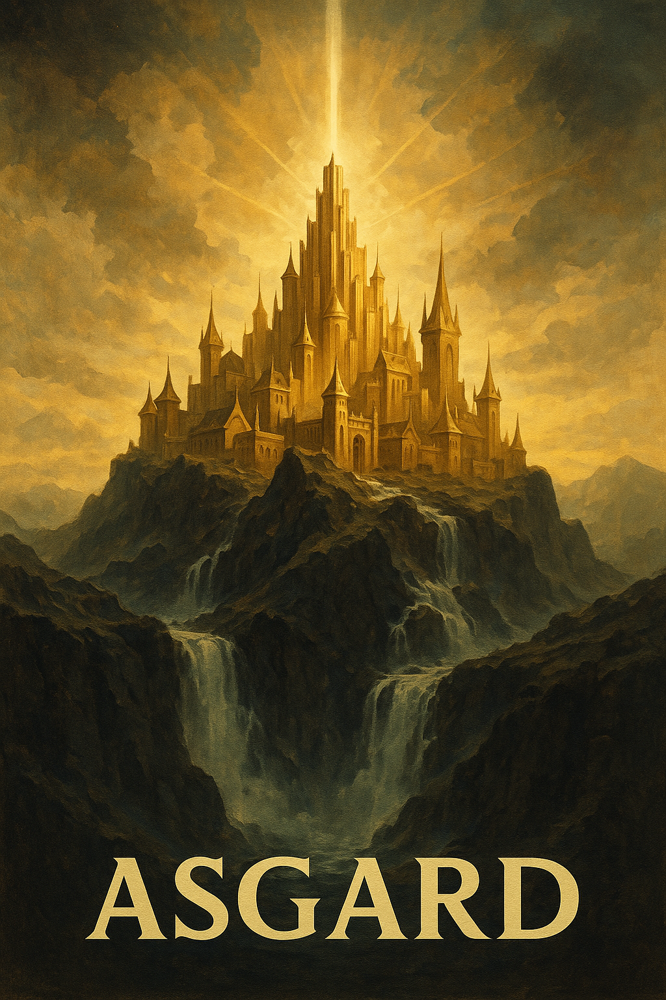
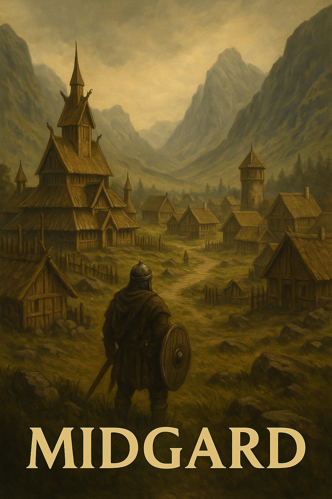
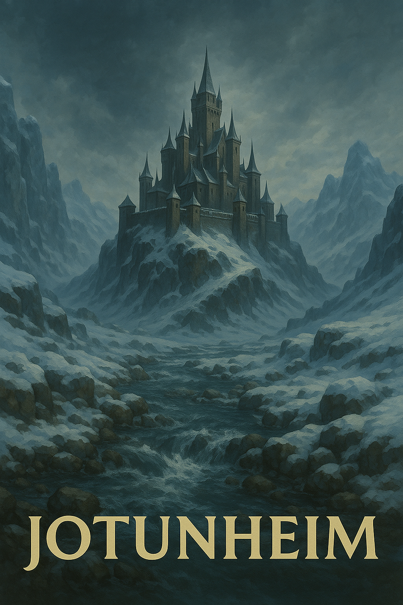
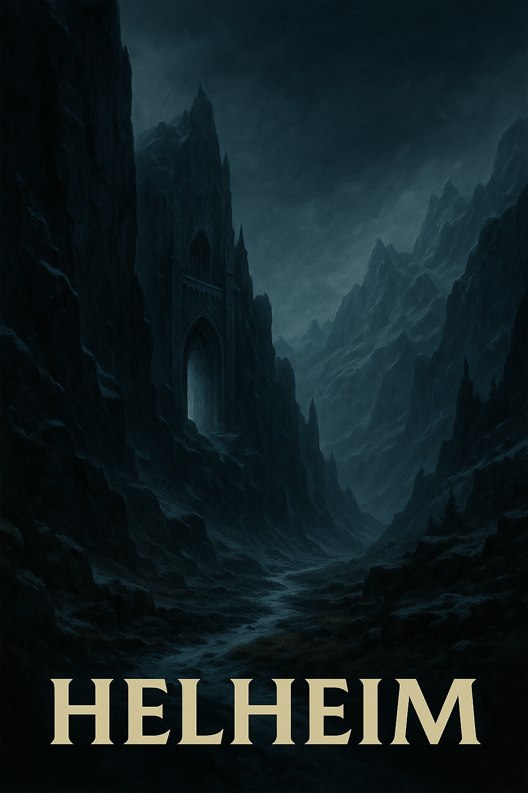

Asgard
Az istenek (ásák) otthona, ahol Odin, Thor és Frigg laknak. Fenséges világ, tele arannyal és dicsőséggel.
Midgard
Az emberek világa, középen helyezkedik el Yggdrasil törzsén. Híd (Bifröst) köti össze Asgarddal.
Vanaheim
A vánok isteneinek világa, akik a termékenység, bölcsesség és varázslat istenei. Később békét kötöttek az ásákkal.
Jotunheim
Az óriások világa, akik gyakran az istenek ellenségei. Vad, természetes és gyakran kaotikus hely.
Alfheim
A fényelfek (ljósálfar) otthona, egy ragyogó és gyönyörű világ. A fény és természet ereje uralja.
Svartalfheim
A törpök (vagy sötételfek) lakhelye. Kiváló kovácsok, ők készítették Thor kalapácsát is.
Muspelheim
A tűz világa, a pusztítás és káosz otthona. Itt él Surt, aki Ragnarök idején elpusztítja a világot.
Niflheim
A jég és köd világa. Hideg, sötét, ősi erővel bíró világ, a kezdetek egyik helyszíne.
Helheim
Az elhunytak lelkeinek birodalma, akik nem hősi halált haltak. Hideg és rideg, Hel istennő uralja.